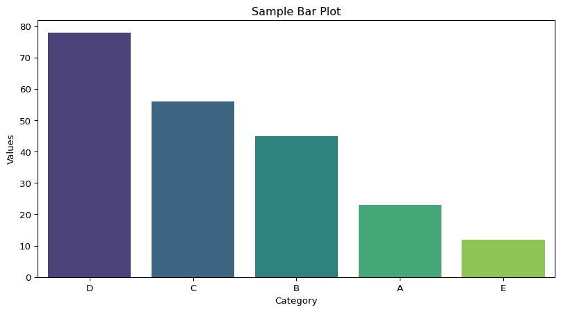

Help on built-in function len in module builtins:
len(obj, /)
Return the number of items in a container.
None
Basics of Python and Introduction to Quarto in Visual Studio Code
Mustafa Aslan, PhD Researcher
Data Lab for Social Good Research Group
Cardiff University, UK
3 Mar 2025
Outline
Introduction to VS
Installing and Importing Libraries in Python
Getting Help in Python
Introduction to Quarto
Introduction to VS Code
Introduction to VS Code
What is VS Code
- A free, and open-source code editor developed by Microsoft.
- Supports multiple programming languages and frameworks.
Key Features
- Integrated Terminal: Access a terminal directly in VS Code for running commands.
- Extensions: Add functionality for specific languages, tools, or frameworks (e.g., Quarto, Python, R).
- Source Control: Built-in Git integration for version control.
- Debugging: Powerful debugging tools for various languages.
- Customizable Interface: Themes, layout, and key bindings to suit user preferences.
Installing and Importing Libraries
What is library?
A collection of pre-written code that contains functions and modules that developers can use to solve programming tasks
Python libraries cover libraries for a wide range of tasks, including:
pandasandnumpyfor data analysis, cleaning, exploration, and efficient numerical computations.scikit-learn,TensorFlowfor machine learning tasks such as prediction, clustering, and forecasting.statsforecast,dartsandskforecastfor forecasting tasks
What is library?
What is PIP?
- PIP is a package manager for Python packages or modules
- PIP is used to install and manage Python libraries
Installing a Library
- Open a terminal or command prompt.
- Use the command
pip install <library-name>.
- Example:
pip install numpy
- Use the command
- Alternatively, run the following code in a notebook to install libraries directly:
python !pip install numpy
- Alternatively, run the following code in a notebook to install libraries directly:
Importing libraries or modules
Once a library is installed, you need to import it into your Python script:
Example:
Use
asto create an alias for convenience (e.g.,import pandas as pdorimport numpy as np).Use
from…import… to call specific functions from libraries or modules :Example:
Namespaces
- A namespace is a system that has a unique name for each and every object in Python.
- An object might be a variable or a method.
- Some functions like
print(),id()are always present, these are built-in namespaces. - When a user creates a module, a global namespace gets created, later the creation of local functions creates the local namespace.
Example:
Getting Help in Python
Using built-in help functions
- Python provides built-in tools to explore libraries and and functions
- Some of them are:
help(): Displays documentation for an object.dir(): Lists the attributes and methods of an objecttype(): Displays the type of the object
Using built-in help functions
Examples:
Example -1:
Example -2:
['__add__', '__class__', '__class_getitem__', '__contains__', '__delattr__', '__delitem__', '__dir__', '__doc__', '__eq__', '__format__', '__ge__', '__getattribute__', '__getitem__', '__getstate__', '__gt__', '__hash__', '__iadd__', '__imul__', '__init__', '__init_subclass__', '__iter__', '__le__', '__len__', '__lt__', '__mul__', '__ne__', '__new__', '__reduce__', '__reduce_ex__', '__repr__', '__reversed__', '__rmul__', '__setattr__', '__setitem__', '__sizeof__', '__str__', '__subclasshook__', 'append', 'clear', 'copy', 'count', 'extend', 'index', 'insert', 'pop', 'remove', 'reverse', 'sort']Introduction to Quarto
Three Main Tasks Using Quarto
Quarto help us publish reproducible, production quality articles, presentations, dashboards, websites, blogs, and books in HTML, PDF, MS Word, ePub, and more.
- Writing: Combine Markdown, code, and visualizations in .qmd files.
- Render: Generate output formats like HTML, PDF, or slides.
- Publish: Share documents or host on platforms like GitHub.
How to Use Quarto in VS Code
1. Install the Quarto Extension
- Open VS Code.
- Go to the Extensions view by clicking on the Extensions icon in the Activity Bar on the side of the window or press Ctrl+Shift+X.
- Search for “Quarto”.
- Install the Quarto extension on you vs code
2. Create a Quarto Document
- Go to File > New File.
- Save the file with a .qmd extension (e.g., example.qmd).
- Start writing your Quarto content.
3. Render a Quarto Document
- To render and preview, execute the Quarto: “Preview” command.
- If you want to preview a different format, use the Quarto: Preview Format command and select the format you want to render to (e.g., HTML, PDF, DOCX).
- Quarto will render the document, and the output file will be saved in the same directory.
Example -1
Here’s an example of creating a bar plot using Seaborn package with a sample dataset:
# Import required libraries
import seaborn as sns
import matplotlib.pyplot as plt
# Sample data
data = {
"Category": ["A", "B", "C", "D", "E"],
"Values": [23, 45, 56, 78, 12]
}
# Convert to a DataFrame
import pandas as pd
df = pd.DataFrame(data).sort_values(by = "Values", ascending=False)
# Create a bar plot
sns.barplot(x="Category", y="Values", data=df, palette="viridis")
# Add a title and labels
plt.title("Sample Bar Plot")
plt.xlabel("Category")
plt.ylabel("Values")
# Show the plot
plt.show()
Example -2
An example of creating a line graph using plotly package